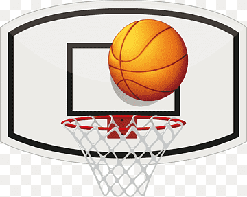
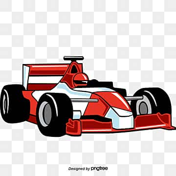
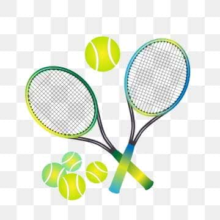
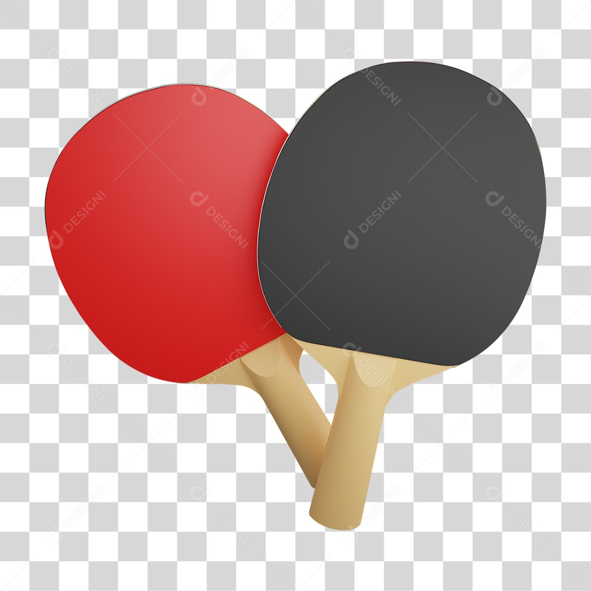
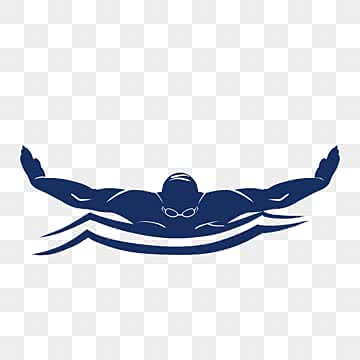

🏀 Basquete
O basquete é um esporte disputado entre duas equipes de cinco jogadores. O objetivo principal é marcar mais pontos que o adversário acertando a bola na cesta. A partida é dividida em quatro períodos e exige velocidade, estratégia e trabalho em equipe.
Os pontos podem valer 1, 2 ou 3, dependendo da forma como são marcados. Além de ser um dos esportes mais populares do mundo, o basquete ajuda no desenvolvimento da coordenação motora, da resistência física e da tomada rápida de decisões.

⚽ Futebol
O futebol é considerado o esporte mais popular do planeta. Cada equipe entra em campo com 11 jogadores e busca marcar mais gols que o adversário durante os 90 minutos de partida.
Além da habilidade com a bola, o futebol exige preparo físico, estratégia e trabalho coletivo. Grandes competições como a Copa do Mundo atraem milhões de torcedores e fazem parte da cultura de diversos países.

🏎️ Fórmula 1
A Fórmula 1 é a principal categoria do automobilismo mundial. Os pilotos competem em Grandes Prêmios realizados em diferentes países, acumulando pontos ao longo da temporada.
O campeonato possui dois títulos principais: o de Pilotos e o de Construtores. A modalidade combina tecnologia de ponta, estratégia de corrida, habilidade dos pilotos e trabalho em equipe nos boxes.

🎾 Tênis
O tênis é um esporte disputado individualmente ou em duplas. O objetivo é fazer a bola tocar a quadra adversária sem que o oponente consiga devolvê-la dentro das regras.
A pontuação é formada por games e sets, exigindo concentração, resistência física e precisão. Torneios como Wimbledon e Roland Garros estão entre os eventos esportivos mais prestigiados do mundo.

🏓 Tênis de Mesa
O tênis de mesa, também conhecido como ping-pong, é um esporte rápido e técnico disputado sobre uma mesa dividida por uma rede. O objetivo é fazer com que o adversário não consiga devolver a bola corretamente.
As partidas normalmente são disputadas em games de 11 pontos. Reflexos rápidos, precisão e controle dos efeitos aplicados na bola são características fundamentais para os atletas da modalidade.

🏊 Natação
A natação é um dos esportes mais completos para o desenvolvimento físico. Os atletas competem para percorrer uma determinada distância no menor tempo possível, respeitando as regras de cada estilo.
Entre os estilos mais conhecidos estão o livre, costas, peito e borboleta. Além das competições, a prática da natação contribui para a saúde cardiovascular, melhora a respiração e fortalece diversos grupos musculares.